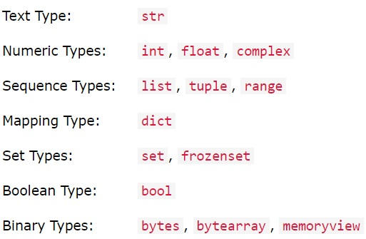

Chapter 2 Foundations of Data Science
In meinem Data Scientist Job werde ich häufig auf ähnliche Probleme stossen mit der Zeit. Hier habe ich eine Reihe an Fragen aufgelistet, welche ich fähig sein muss, zu beantworten, wenn ich effizient in meinem Beruf sein will!
2.1 Questions you need to answer when starting a new Project
BEFORE you start writing your R-Scripts or Jupyter-Notebooks, you first need to think about several key-things & -questions:
- Welche Datenbasis haben wir?
- Was ist das Prognoseobjekt?
- Welche Metrik hast du in deinen Notebooks verwendet?
- Wie ist das Trainings- & Validierungs-Dataset aufgebaut?
- Welche Daten sind im Test-Set, welche für den Benchmark verwendet werden?
- Welche Prognoseansätze wurden angewendet?
- Welche Daten sind effektiv genutzt & welche sind verfügbar?
- Etc…- Datenbasis // Woher kommen die Daten?:
ENTSOE exklusiv. Das ist der Dachverband der TSO (kennen Nachfrage und Angebot)
- Prognoseobjekt (= y-dach):
Stündliche EUR/kWh für Folgetag.
- Metrik:
Zeigt, wie gut das Modell “lernt” (= training error) & “generalisiert” // exrapoliert (= generalization error). Im Notebook von Philipp werden 2 verschiedene Metriken verwendet, nämlich:
- Mean Absolute Error, sowie
- [Root] Mean Squared Error.Training Dataset: Daten von 2019.
Validation Dataset: Random choice of 20% of the hours within this year.
Mit welchem true y-value werden die Predictions verglichen? // Was ist der Benchmark? // Test-Set: EFFEX Spotpreise benutzt für Benchmark // true [y-]values.
Struktur [der Analyse]:
- Output: Day ahead Strompreis CH
- Input: jeweils 24h für ca. 20 Prädiktoren. Reshape: K dimensionen = #Prediktors x 24h
Was ist die Daten-Imputation Methode?: Missing Values mit Mittelwerten
2.2 Effective Research: How to find answers quickly?
How to find Answers quickly, especially when a Concept is complicated
Aus Erfahrung weiss ich jetzt, dass Youtube bisher immer, die beste Quelle war, um mir etwas schnell & effizient beizubringen.
Twitter-Community von Wissenschaftlern sind ebenfalls sehr wertvoll. Als Beispiel wäre dieser Twitter-Post vom Prophet-Gründer.
2.3 How to read Notebooks from other People?
Es geht am Anfang um die Gesamtübersicht und noch nicht um die Details // Eigenheiten im Code oder im Datensatz! Am wichtigsten ist es, dass du diese Fragen zunächst beantworten kannst, wenn du das Notebook liest.
2.4 Machine-Learning Theory
2.4.1 Difference between Training-, Validation- & Test-dataset
Since I started with Machine Learning, I was always confused about the concept of data splitting, e.g. which sub-set of the entire dataset is now considered to be the training dataset, which one is the validation dataset and which one is the testing dataset.
In the graph below, you see how it is defined correctly:
Training Set VS. Validation Set VS. Test Set
- Important to note: There is oftentimes confusion between the definition of validation dataset VS. testing dataset, because there is no consens about it. Therefore - and if we take the above picture as the “true” definition - some people will call the validation dataset the “test dataset” and vice versa, e.g. the test data as the “validation data”! xD
2.4.1.1 Validation-Set VS. Test-Set
What is the difference between a
Validation Datasetand aTesting Dataset?
Es gibt keinen Konsens dafür, was nun das validation dataset und welches das test set genau ist. Nima (= mein Mentor bei der SBB) verwendet den Begriff test set für dasjenige Dataset, welches hold out // separat für die (spätere) Prediction verwendet wird.
- Regel zu Unterscheidung der beiden Terme: Wenn steht:
we hold out [name of the set], dann ist es dastesting dataset.
2.4.1.2 Reason for a Validation-Set
Why do we need
validation set?
At the end, you want the best model possible. If you want to tune your hyperparameters, you will need your test set. The big problem here, however, is that - if we use the test-set more than once when wanting to find out the best hyperparameters - our model will know the data by heart and the predictions will be too good, but only on this dataset that you are currently using! The model will not generalize well on new data.
That’s why we need this additional subsetting of the training-dataset!
2.4.2 Concept of Stratification
Angenommen du hast eine kategorische Y-Variable, welche entweder Nullen oder Einsen als Werte annimmt. Nehme nun an, dass - im Training-Dataset - der Anteil der Nullen 60% beträgt. Wenn du nun ein stratified Sample willst, dann wird das Test-Dataset ebenfalls einen Anteil von 60% an Nullen enthalten!
2.4.3 Cross-Validation
The concept of cross-validation can be splitted into 2 parts:
- Step 1: Split your dataset into 1 training- & 1 test-set.
- Rule of Thumb: Usually, the split is 70-90% training set and 10-30% for the test-set.
- Code Example:
Example of Code for Train-Test Split
- Step 2: Now, we divide the training set further, such that it will contain - if we assume a 3-fold cross-validation as an example - 3 different validation sets and 3 training sets.
Allgemeine Cross-Validation
2.4.3.1 Special Case: Cross-Validation for Time-Series Data
Because time-series are ordered, since the flow of time is only going forward, the graph shown above for step 2 is not valid and we need another approach:
2.4.3.2 Why do we use Cross-Validation?
There are 2 reasons:
- It allows us to compare the score (MAPE, MAE or RMSE) of different model set-ups, for example:
- CV-Scheme changes, e.g. a Time-Series Prophet-Model with a
Sliding-Windowof 4 Months VS. a Prophet-Model with anExpanding-Window(full past). - OR changes in the covariates, e.g. a model that includes an important covariate, while the other model does not. This will allow you to draw conclusions regarding the selection of “the best” model.
- It allows you to assess the performance of different machine-learning methods. In a classification-setting for example, you can use the confusion-matrix.
Cross-Validation for Time Series
This picture shows an example of a 3-fold cross-validation for a time-series.
2.4.4 Normalisierung der Daten
Was versteht man unter
Normalisierung? Was sollte man dabei beachten? Warum wird in einem Pre-Processing Schritt eine Normalisierung durchgeführt?
Normalisierung == Subtrahiere den Mittelwert und dividiere durch die Standardabweichung jedes Merkmals. Es sollte beachtet werden, dass der Mittelwert und die Standardabweichung nur anhand der Trainings-Daten berechnet werden sollte, damit die Modelle keinen Zugriff auf die Werte in den Validierungs- und Testsätzen haben.
Es ist wichtig, Features zu skalieren, bevor ein neuronales Netzwerk trainiert wird. Normalisierung ist eine gängige Methode für diese Skalierung.
2.4.5 RNN
Was macht ein
Reccurrent Neural Network (RNN)?
Ein Beispiel für ein RNN wäre ein Long Short Term Memory Modell (LSTM Modell). Dabei nimmt das RNN zunächst ein ganz kleines Vergangenheits-Intervall, macht eine Modell-Estimation und dann - im nächsten Schritt - wird ein grösseres Vergangenheits-Intervall verwendet (inkl. predicted Y-Variable aus dem vorherigen Modell), um eine neue Modell-Estimation zu machen etc.

Beispiel eines RNN: hier ein LSTM
2.4.6 Data-Pipelines
- Ziel von Data-Pipeline: Write more clean // readable code, especially when you do data cleaning. A datapipeline is basically a way of standardizing your code.
- Warum sind Data-Pipelines so geil?: Because you can compare many different regression-models (Linear-Regression Vs. Logistic-Regression Vs. RandomForrest …), applying different “scaling-techniques” (= normalize a variable with mean 0 and standard-deviation of 1), as well as using “data cleaning techniques” (= reduce dimensions via PCA, reduce missing-values etc…). Another cool thing to note is, that you can choose the order, in which the cleaning, scaling and fitting occures!
- See also the summary of the guy on Youtube ab 10:00-11:00.
- Link to Github for an example: Jupyter-Notebook code-example on how to create a little Data-Pipeline by yourself
2.5 Programming Theory
2.5.1 Data-Types
In R oder Python ist es wichtig zu verstehen, dass gewisse Funktionen nur dann funktionieren, wenn die Inputs, die wir in die Funktion eingeben wollen, einen bestimmten Data-Type aufweisen müssen.
On the website W3-Schools, I found this extremely good overview of all data-types, which is crucial concept to understand when doing data cleaning.
 Data-Types are a key-thing to understand. Otherwise, you won’t be able to apply some algorithms on your dataset!
2.5.2 Global Variables VS. Local Variables
Variables that are created outside of a function are known as global variables.
Global variables can be used by everyone, both inside of functions and outside.
- Example of a global variable:
x = "awesome"
def myfunc():
print("Python is " + x)
myfunc()
>>> Python is awesomeIn contrast, if you create a variable with the same name inside a function, this variable will be local, and can only be used inside the function. The global variable with the same name will remain as it was, global and with the original value.
- Example of a local variable:
x = "awesome"
def myfunc():
x = "fantastic"
print("Python is " + x)
myfunc()
print("Python is " + x)- Output of this: click here
2.5.3 Array
What is an
array?
An Array is a List of Data. In a DataFrame-Object, you can think of a column or a row to be arrays. It is a data structure, which contains “n” objects within a list.
- Quelle: The Coding Train 3:10-3:22
2.6 Statistics-Theory
2.6.1 P-Hacking
Was ist p-hacking?
In der Statistik gibt es den p-Wert ein: Man nimmt an die Hypothese sei wahr und berechnet dann die Wahrscheinlichkeit, dass die beobachtete Statistik mindestens so extrem ausfallen würde (für die Gegner von Wischi-Waschi hier die Wikipedia-Definition). Falls diese Wahrscheinlichkeit unter 5% liegt, dann sei das Resultat “statistisch signifikant” (yay!) und die Nullhypothese kann verworfen werden, was oftmals die Absicht ist.
Das Problem ist nur: Hypothesen gibt es viele und z.T. auch recht ähnliche. Wenn man genug Hypothesen aufstellt - vor allem, nachdem man sich die Daten angeschaut hat - dann ist es durchaus möglich, dass man ein statistisch signifikantes Resultat erhält, unabhängig davon, ob das Resultat tatsächlich auch stimmt. Das nennt man p-Hacking. Es kommt häufig in der Forschung vor, aber es kommt sicher auch in der SBB vor (dennoch hier eine +1 für Hypothesen-basiertes arbeiten!). Wie einfach man in die “falsche Signifikanz Falle” tappen kann, wird hübsch in dieser Gallerie falscher Korrelationen illustriert.
2.7 Appendix for the Future
Welche Zeitperiode sind am geeignetsten für Zeitreihenanalysen mit Machine Learning?